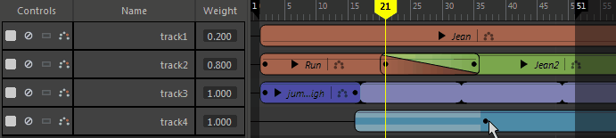

轨迹是沿时间视图排列的内容，也是您在“时间编辑器”(Time Editor)中添加和排序片段时所处的背景。轨迹可以承载片段和组片段。
公用轨迹操作
- 创建轨迹
-
- 从时间编辑器菜单栏中选择“轨迹 > 动画轨迹/音频轨迹”(Tracks > Animation Track/Audio Track)。
- 在名单或时间视图中单击鼠标右键，然后从时间编辑器的“轨迹”(Track)上下文菜单中选择“创建动画轨迹”(Create Animation Track)/“创建音频轨迹”(Create Audio Track)。
- （仅限音频轨迹）将音频文件拖动到时间视图中的空白区域或现有轨迹中间。
- 删除轨迹
- 若要从“时间编辑器”(Time Editor)中移除轨迹，请选择一个轨迹（或按住 Shift 键的同时选择多个轨迹），然后从“轨迹”(Track)上下文菜单中选择“删除轨迹”(Delete Track)（或按 Delete 键）。
- 重命名轨迹
- 可以通过在名单中选择一个轨迹，然后在“属性编辑器”(Attribute Editor)中选择“重命名轨迹”(Rename Track)，重命名“时间编辑器”(Time Editor)轨迹。请参见属性编辑器中的时间编辑器。
- 选择多个轨迹
- 若要选择多个轨迹，请在按住 Shift 键的同时选择，即可一次性选择多个轨迹。可以同时为多个轨迹设置关键帧，只要已在名单中选定这些轨迹即可。请参见在时间编辑器中设置动画关键帧。
注： 可以选择轨迹或片段，但不能同时选择两者。
- 重新排列轨迹
- 在名单中选择一个轨迹，在其上单击鼠标右键，然后从“轨迹”(Track)上下文菜单中选择“将选定轨迹上移”(Move Selected Tracks Up)/“将选定轨迹下移”(Move Selected Tracks Down)。
- 显示轨迹关键帧
- 可以显示在轨迹上的片段中设置的关键帧。
- 在时间编辑器名单控件中单击相应轨迹的“显示关键帧”(Show Keys)图标
 。
。
- 关键帧将在片段上显示为线。请参见在时间编辑器中设置动画关键帧。
- 禁用轨迹
- 通过“禁用”(Mute)
 可以暂时禁用轨迹并防止播放。禁用某个轨迹后，它在时间视图中将变暗，且“禁用”(button)按钮将变为红色。
可以暂时禁用轨迹并防止播放。禁用某个轨迹后，它在时间视图中将变暗，且“禁用”(button)按钮将变为红色。
-
若要禁用轨迹，请执行以下操作：
- 在名单中单击相应轨迹的“禁用”(Mute)图标 ，或在轨迹上单击鼠标右键并选择“禁用”(Mute)。
- 若要禁用多个轨迹，请按住 Shift 键并选择这些轨迹，然后单击“禁用”(Mute)图标。
注： 若要完全临时禁用时间编辑器（而不仅仅是单个轨迹）以便创建新动画，请参见禁用时间编辑器。 - 在名单中单击相应轨迹的“禁用”(Mute)图标
- 单放轨迹
- 通过“单放”(Solo)
 可以挑出一个时间编辑器轨迹，以便仅播放该轨迹。这会禁用其他轨迹，使您可以专注于隔离场景中的动画。
可以挑出一个时间编辑器轨迹，以便仅播放该轨迹。这会禁用其他轨迹，使您可以专注于隔离场景中的动画。
-

-
单放轨道
- 在名单中单击相应轨迹的“单放”(Solo)图标 。单放某个轨迹后，时间视图中的剩余轨迹将暗显，且“禁用”(Mute)按钮将变为黄色。
- 若要单放多个轨迹，请按住 Shift 键并选择这些轨迹，然后单击“单放”(Solo)图标。
- 在名单中单击相应轨迹的“单放”(Solo)图标
- 为轨迹生成重影
- 通过为轨迹生成重影，您可以为轨迹上的动画对象创建简化表示，用来预览每个片段的影响。

-
若要重影轨迹，请执行以下操作：
- 在名单中单击相应轨迹的“重影”(Ghost)图标
 。
。
- 若要为多个轨迹生成重影，请按住 Shift 键并选择这些轨迹，然后单击“重影”(Ghost)图标。有关重影的信息，请参见通过时间编辑器重影预览动画。
- 在名单中单击相应轨迹的“重影”(Ghost)图标
- 更改轨迹权重
- 通过更改轨迹权重，您可以确定其动画在场景中的播放进度。在“轨迹权重”(Track Weight)字段中输入一个值。
- 请参见设置时间编辑器片段权重的关键帧。
- 展开片段的层次
-
注： 尽管展开片段层次的操作是在轨迹的名单控件中完成，但是仍然将其视为一个片段操作，因为它显示了关联的关键帧。您可以查看片段的层次，显示动画中的关键帧。
-

-
展开片段的层次
- 单击片段名称旁边的箭头。在名单控件中，将显示一系列新的层次箭头，其颜色与选定片段相同。
- 展开每个箭头以显示选定片段的可设置动画属性。
- 重命名轨迹
- 通过双击名单中的时间编辑器轨迹名称并输入一个新名称，可以更改轨迹的名称或编号。